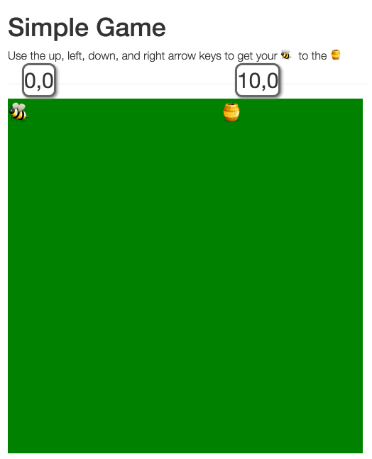

Checking who won
In the last exercise, you wrote some functions to move control a player. If you weren't able to complete the exercise, download the solution. In this exercise, we'll be adding more complex test cases.
goal that contains the current position of the goal as x and y properties:
console.log(goal.x); // logs 0
console.log(goal.y); // logs 0checkWin that checks whether the player has won. A player has won when the player's x and y coordinates match those of the goal.renderWin. renderWin should be called whenever checkWinis.GameSpec.js, write tests for the checkWin function. Remember that you sometimes have to "set the stage" before running the test. You should also be sure to use at least 1 spy.Game.js, write code for checkWin.For your reference, we have provided a basic solution: solution.zip
